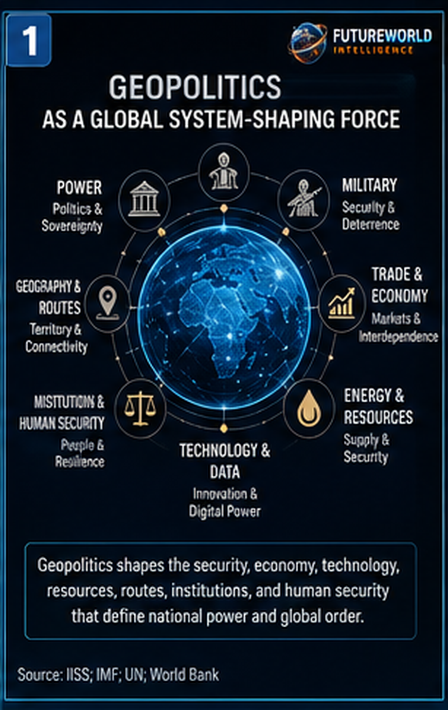
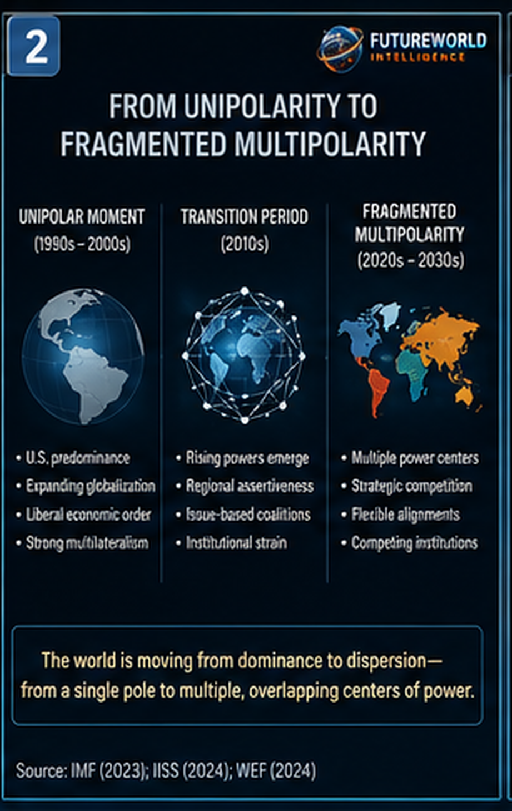
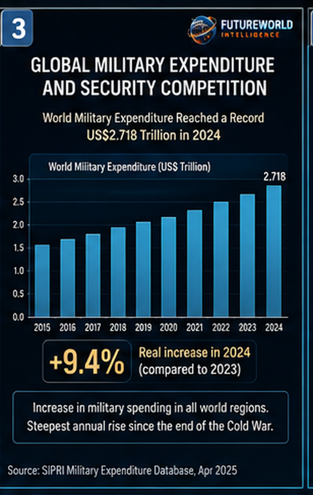
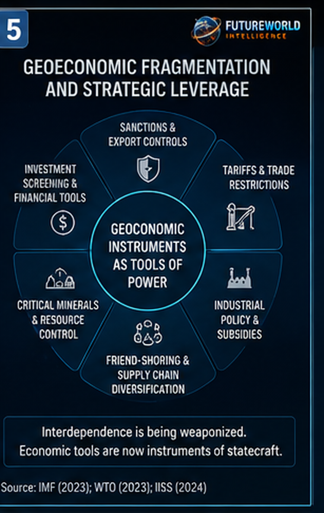
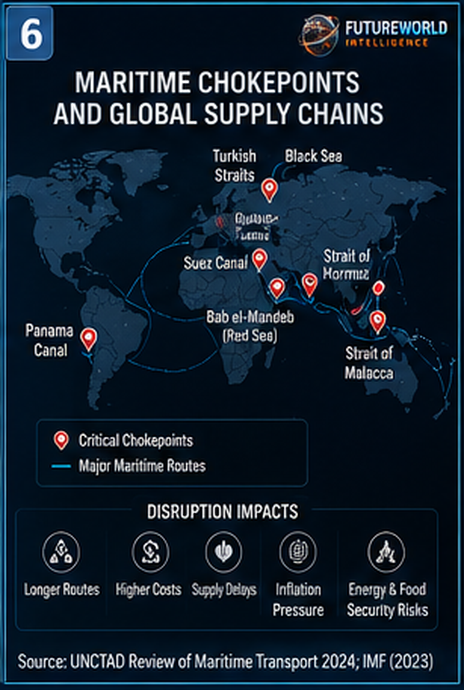
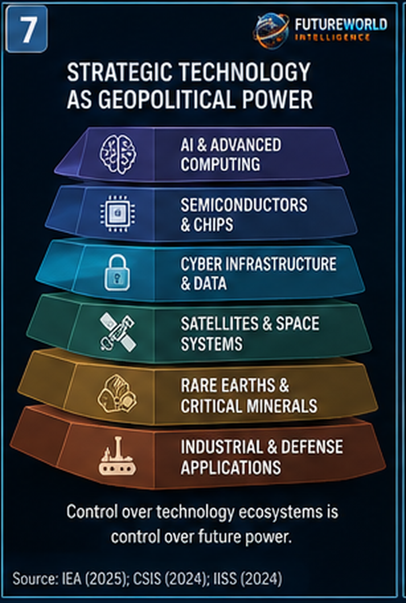
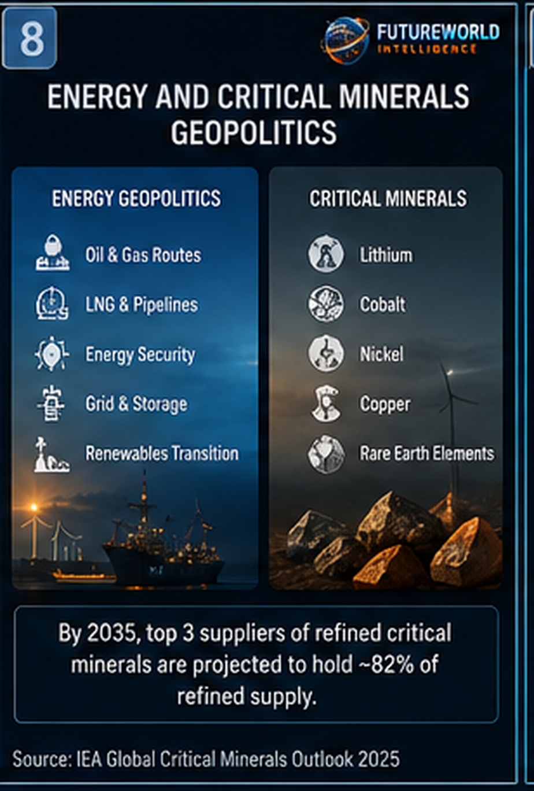
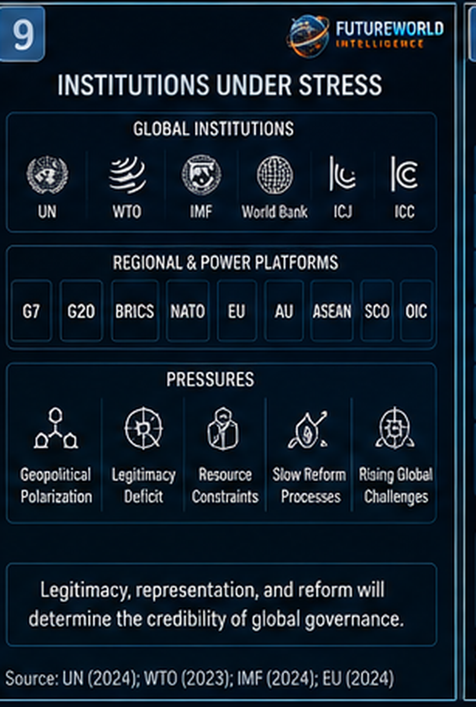
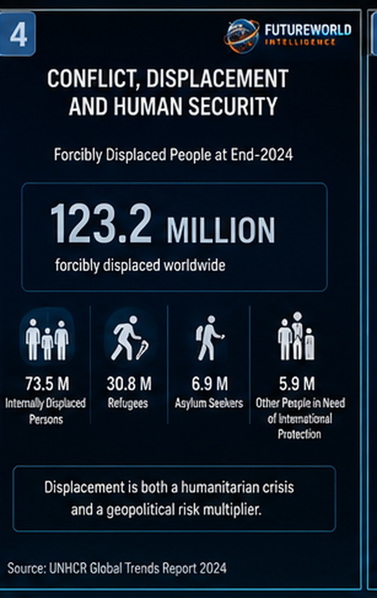
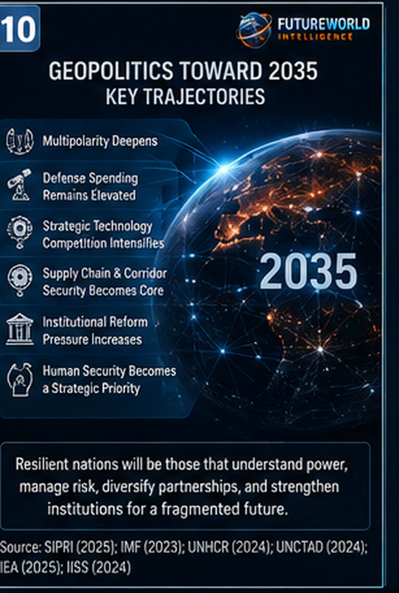

FutureWorld Intelligence Report Series
The Five Forces Shaping the Future Toward 2035
Force No. 3: Geopolitics
The Fragmented Power System Reshaping Security, Trade and Global Order
Document Control and Responsible Use Statement
This report is prepared for educational, policy-briefing, public-intelligence, and strategic foresight purposes. It is intended to inform policymakers, public-sector officials, researchers, students, civil-society organizations, development practitioners, educators, journalists, and strategic planners about the evidence base supporting the claim that geopolitics is one of the principal forces shaping the global future toward 2035.
This report is not diplomatic, military, intelligence, investment, legal, or security advice. It does not represent the official position of any government, multilateral institution, university, research body, corporation, or organization named within it.
The report uses the term geopolitics in its International Relations sense: the interaction of geography, power, sovereignty, national interest, military capability, alliances, trade routes, energy systems, technology control, institutions, strategic narratives, and great-power competition. It treats geopolitics not merely as war or diplomacy, but as the organization of power across territory, infrastructure, markets, institutions, and rules.
The report distinguishes between evidence, interpretation, and projection. Some indicators are directly measurable, including military expenditure, maritime trade disruption, forced displacement, defence burdens, and critical-mineral concentration. Other elements — such as future alliance behaviour, escalation pathways, institutional reform, strategic autonomy, and the balance of power toward 2035 — are analytical judgments and should be read as strategic assessment rather than prediction.
Executive Summary
Geopolitics is one of the principal forces shaping the global future toward 2035 because the international system is moving from a relatively integrated post-Cold War order toward a more fragmented, competitive, securitized, and multipolar environment.
The central argument of this report is that geopolitics is no longer confined to military conflict, diplomatic rivalry, or territorial disputes. It has become a global operating condition shaping trade, technology, energy, food security, development finance, maritime routes, supply chains, migration, national security, and institutional legitimacy.

Three lines of evidence support treating geopolitics as a system-shaping force.
First, global military expenditure has reached record levels. The Stockholm International Peace Research Institute reports that world military expenditure reached approximately US$2.718 trillion in 2024, a 9.4 percent real increase from 2023 and the steepest year-on-year rise since at least the end of the Cold War. This is not merely a defence-budget statistic. It is an indicator of heightened threat perception, alliance recalibration, industrial mobilization, procurement expansion, arms modernization, and the re-securitization of national policy.
Second, geopolitical disruption is altering the physical architecture of globalization. More than 80 percent of world trade by volume is carried by sea, and major maritime chokepoints — including the Suez Canal, Red Sea, Bab el-Mandeb, Strait of Hormuz, Strait of Malacca, Panama Canal, Turkish Straits, and Black Sea routes — expose the world economy to concentrated risk. UNCTAD reports that by mid-2024, tonnage transiting the Suez Canal had fallen by 70 percent, ship capacity crossing the Gulf of Aden was down 76 percent, and Cape of Good Hope arrivals had surged 89 percent as vessels rerouted around Africa. These disruptions increased distance, time, insurance exposure, freight costs, emissions, and supply-chain uncertainty.
Third, geopolitical instability is producing large-scale human-security consequences. UNHCR reports that 123.2 million people were forcibly displaced at the end of 2024 due to persecution, conflict, violence, human-rights violations, and events seriously disturbing public order. Forced displacement is not only a humanitarian emergency. It is an indicator of state fragility, institutional breakdown, conflict persistence, border stress, urban pressure, labour-market disruption, education loss, and regional instability.
Geopolitics has also become inseparable from technology. Artificial intelligence, semiconductors, cyber infrastructure, satellites, drones, rare earth elements, cloud computing, undersea cables, data centres, and digital platforms are now strategic assets. States are not competing only for territory, oil, ports, and military influence. They are competing for compute power, chips, data, standards, critical minerals, industrial ecosystems, energy security, and control over future technological platforms.
This report concludes that geopolitics will shape the future through six major pathways: great-power competition, geoeconomic fragmentation, strategic technology rivalry, maritime and supply-chain vulnerability, institutional stress, and human-security disruption.
By 2035, the dividing line between resilient and vulnerable societies may increasingly depend on geopolitical resilience: the capacity to maintain strategic autonomy, diversify partnerships, protect critical supply chains, secure energy and food systems, manage borders, defend digital infrastructure, sustain institutional legitimacy, and navigate a fragmented international order without becoming trapped by rivalry.
Geopolitics is not only about conflict between states. It is a structural force reorganizing the global order.
1. Core Thesis: Why Geopolitics Qualifies as a Future-Shaping Force
Geopolitics qualifies as a global future-shaping force because it determines the security, economic, territorial, institutional, and technological environment within which all other systems operate.
Climate change changes the physical baseline of the planet. Artificial intelligence changes the cognitive and technological baseline of human systems. Geopolitics changes the power baseline of the international system.
It influences who can trade freely, who faces sanctions, who controls shipping lanes, who accesses technology, who attracts investment, who benefits from alliances, who is isolated, who is protected, who is coerced, who is displaced, and who shapes global rules.
In International Relations terms, geopolitics is the field in which polarity, sovereignty, strategic competition, alliance politics, balance of power, deterrence, security dilemma, geoeconomics, and institutional order interact.
This report organizes the geopolitical future-shaping effect around three interlinked transformations.
- Security transformation — military expenditure, deterrence, alliance expansion, arms modernization, nuclear risk, drones, missiles, cyber operations, grey-zone coercion, proxy conflict, and critical-infrastructure protection.
- Economic transformation — sanctions, tariffs, export controls, friend-shoring, near-shoring, supply-chain diversification, industrial policy, energy security, development finance, critical minerals, and strategic corridors.
- Institutional transformation — stress on the United Nations system, World Trade Organization rules, development finance institutions, regional organizations, expanded blocs, alternative platforms, diplomatic realignment, and demands for greater representation by emerging and developing economies.
A force shapes the future when it moves beyond one sector and reorganizes many systems at once. Geopolitics meets that test. It affects war and peace, trade, finance, energy, climate cooperation, AI governance, migration, food security, public budgets, maritime transport, digital infrastructure, and national development choices.
The future will not be shaped only by science, markets, technology, or climate. It will also be shaped by power: who has it, who lacks it, who contests it, and who builds institutions resilient enough to survive its instability.
2. From Unipolarity to Fragmented Multipolarity
The post-Cold War era was frequently described as a unipolar moment: one dominant superpower, expanding globalization, relatively open trade, growing multilateral institutions, and the expectation that economic interdependence would reduce the probability of major-power conflict.
That order has weakened.
The emerging international system is not a simple return to Cold War bipolarity. It is more complex. The Cold War was structured largely around two competing blocs. The current system contains multiple power centres, overlapping partnerships, regional ambitions, non-aligned strategies, middle-power activism, economic interdependence, technological rivalry, and issue-based coalitions.

The result is best understood as fragmented multipolarity.
In this environment, states often cooperate in one domain and compete in another. A country may trade with one great power, import defence equipment from another, receive infrastructure finance from a third, seek energy from a fourth, and participate in regional forums that do not align neatly with any single bloc.
This creates flexibility, but also strategic complexity.
The defining features of the emerging order include intensified strategic competition between the United States and China; Russia’s confrontation with the West after the invasion of Ukraine; increased strategic weight of India, Türkiye, Saudi Arabia, Brazil, Indonesia, Iran, South Africa, and other middle or regional powers; renewed importance of groupings such as BRICS, G20, G7, NATO, SCO, ASEAN, the European Union, and regional development banks; expanded use of sanctions, export controls, tariffs, investment screening, and technology restrictions; and growing emphasis on strategic autonomy, national resilience, domestic manufacturing, critical infrastructure, and supply-chain security.
This does not mean globalization has ended. Trade, finance, migration, digital systems, shipping, and communication still connect the world deeply. But globalization is increasingly shaped by security logic. The central question is no longer only, “What is efficient?” It is increasingly, “What is secure, reliable, diversified, controllable, and politically acceptable?”
This transition from efficiency-led globalization to security-conditioned interdependence is one of the defining geopolitical shifts of the 2020s and 2030s.
3. Security Environment: Deterrence, Military Expenditure and Escalation Risk
Military expenditure is one of the clearest empirical indicators of geopolitical change. When states perceive higher threat levels, they allocate more resources to defence, intelligence, cyber capability, border security, air defence, naval power, satellites, missile systems, drones, military modernization, and command-and-control systems.
Rising military expenditure does not automatically mean war is inevitable. States may increase defence budgets to deter aggression, reassure allies, modernize outdated forces, protect borders, or respond to regional instability. However, sustained increases also reveal a deeper structural shift: governments are preparing for a more contested security environment.

SIPRI’s 2024 military-expenditure data show a world moving toward rearmament and securitization. Military spending increased in all world regions. NATO members accounted for a large share of global expenditure. Europe’s defence spending rose sharply under the pressure of the Russia-Ukraine war. The Middle East also experienced significant growth amid regional conflict and insecurity.
Security competition is visible across multiple theatres.
In Europe, the Russia-Ukraine war has revived territorial defence, deterrence, military-industrial mobilization, sanctions, energy-security policy, and NATO force planning.
In the Middle East, overlapping conflicts, proxy competition, missile threats, maritime insecurity, and energy-route vulnerability connect local crises to global markets.
In the Indo-Pacific, the Taiwan Strait, South China Sea, East China Sea, Korean Peninsula, maritime access, military modernization, and technological rivalry are shaping security planning.
In South Asia, nuclear deterrence, India-Pakistan rivalry, Afghanistan’s instability, cross-border militancy, water stress, and China-India competition make the region strategically sensitive.
In Africa, coups, civil wars, insurgencies, fragile state capacity, external military partnerships, resource competition, and climate-linked livelihood pressure are producing complex security challenges.
Modern conflict is also changing. Drones, cyber operations, electronic warfare, satellite imagery, artificial intelligence, precision missiles, commercial surveillance tools, information operations, and low-cost military technologies are altering the battlefield. Smaller actors can now impose costs on stronger actors. Non-state armed groups can threaten shipping, infrastructure, cities, energy systems, and military assets. The boundary between military and civilian systems is becoming less distinct.
This produces a world of grey-zone competition: coercive activity below the threshold of formal war but above ordinary diplomacy. Grey-zone tools include cyberattacks, disinformation, sabotage, maritime harassment, proxy forces, sanctions, election interference, coercive trade measures, infrastructure pressure, and information manipulation.
By 2035, national security will not be measured only by conventional military strength. It will also depend on cyber resilience, energy security, food-system resilience, critical-infrastructure protection, border management, intelligence capacity, social cohesion, and institutional credibility.
4. Geoeconomic Fragmentation: When Interdependence Becomes Leverage
Geoeconomics is the use of economic instruments for strategic purposes. It includes sanctions, tariffs, export controls, subsidies, investment screening, currency systems, development finance, debt diplomacy, industrial policy, critical-mineral access, and supply-chain restructuring.
In the earlier globalization model, supply chains were organized primarily around efficiency, cost minimization, specialization, and just-in-time logistics. In the emerging geopolitical environment, supply chains are increasingly judged by resilience, political risk, national security, and alliance reliability.

This shift is visible in several policy concepts: friend-shoring, near-shoring, reshoring, de-risking, strategic autonomy, and weaponized interdependence.
Geoeconomic fragmentation does not mean states stop trading. It means trade becomes more politically filtered. Goods, data, capital, energy, technology, and infrastructure are increasingly assessed through the lens of national security.
This matters for developing countries. Many developing economies rely on imported fuel, fertilizer, food, machinery, medicines, digital services, and technology. They also depend on exports, remittances, donor finance, and foreign investment. If trade becomes more fragmented, access may become more uncertain and costs may rise.
For countries such as Pakistan, the strategic challenge is not isolation. It is diversification. A resilient geoeconomic strategy requires multiple partnerships, improved domestic capacity, secure trade corridors, energy diversification, export competitiveness, data governance, and the ability to participate in regional connectivity without excessive dependence on one external patron.
The future economy will not be fully globalized or fully national. It will be hybrid: connected, but cautious; open, but selective; competitive, but interdependent; efficient, but increasingly securitized.
5. Maritime Chokepoints and Supply-Chain Vulnerability
Geopolitics becomes most visible where geography concentrates global flows. Maritime chokepoints are narrow passages through which large shares of global trade, energy, food, and industrial goods move. When these corridors are disrupted, distant societies experience the consequences through prices, delays, shortages, inflation, and strategic uncertainty.
Critical chokepoints include the Suez Canal, the Red Sea and Bab el-Mandeb, the Strait of Hormuz, the Strait of Malacca, the Panama Canal, the Turkish Straits, the Black Sea, and the South China Sea.

These places matter because the global economy is physically routed through them. A regional conflict, blockade risk, piracy threat, drought restriction, sanctions regime, naval confrontation, or insurance shock can rapidly affect global trade.
The Red Sea and Suez disruptions demonstrated how regional conflict can become a global shipping problem. UNCTAD reports that by mid-2024, ship capacity crossing the Gulf of Aden was down 76 percent, tonnage transiting the Suez Canal was cut by 70 percent, and arrivals around the Cape of Good Hope surged 89 percent. Longer routes increased vessel ton-mile demand, container-ship demand, fuel costs, insurance costs, chartering costs, and emissions.
The Panama Canal demonstrated another form of vulnerability: climate stress interacting with global trade infrastructure. Drought-related water constraints reduced canal capacity, increased waiting times, and forced rerouting for some vessels. This shows that geopolitical and climate risks increasingly interact.
The Strait of Hormuz and the Strait of Malacca are especially consequential for energy security. Hormuz remains one of the world’s most strategically sensitive oil and gas corridors. Malacca is one of the busiest maritime trade routes and a central artery connecting the Indian Ocean, East Asia, the Middle East, and Europe. Reuters reported in 2026 that the Malacca Strait carried nearly 22 percent of global maritime trade and that, in the first half of 2025, around 23.2 million barrels per day of oil transited Malacca, compared with about 20.9 million barrels per day through Hormuz.
This is where the Five Forces intersect. Climate change affects water levels and extreme-weather exposure. Geopolitics affects route security. Energy transition affects fuel flows and mineral supply chains. Artificial intelligence affects logistics, monitoring, and risk prediction. Human development determines how severely societies are affected by price shocks.
By 2035, maritime resilience will require route diversification, port modernization, naval cooperation, early warning, digital tracking, insurance reform, regional trade alternatives, climate-resilient canals, and diplomatic coordination.
Supply-chain resilience is now a national-security issue.
6. Strategic Technology: Chips, AI, Cyber and Space as Power Systems
Technology has become one of the main arenas of geopolitical competition. The most powerful states are competing over semiconductors, artificial intelligence, quantum technologies, satellites, cyber infrastructure, undersea cables, cloud computing, rare earth elements, robotics, drones, biotechnology, and advanced manufacturing.

This produces a new geopolitical reality: power is no longer measured only by territory, population, natural resources, military size, or GDP. It is increasingly measured by control over technological ecosystems.
Semiconductors are central because they power artificial intelligence, military systems, smartphones, vehicles, industrial automation, satellites, cloud computing, and data centres. A country without access to advanced chips cannot easily build frontier AI, high-end weapons systems, advanced surveillance platforms, or competitive digital infrastructure.
Cybersecurity is equally strategic. Banks, hospitals, airports, power grids, water systems, government records, telecommunications networks, and military systems are now digital. A cyberattack can disrupt public services without a conventional invasion.
Space infrastructure has also become strategic. Satellites support navigation, communication, weather forecasting, military targeting, disaster response, agriculture monitoring, banking synchronization, internet connectivity, and border surveillance. Disruption of space assets can affect both civilian and military systems.
The strategic technology contest has three major implications. First, technology supply chains will become more politicized. Second, states will invest more in domestic and allied technological capacity. Third, developing countries may face a new dependency risk if they remain consumers of foreign digital infrastructure without local capacity, cybersecurity, regulation, data governance, and human capital.
By 2035, technological sovereignty will not mean that every country builds everything domestically. That is unrealistic for most states. It will mean the ability to understand dependencies, diversify critical systems, protect data, negotiate better terms, build domestic skills, and prevent strategic lock-in.
7. Energy, Critical Minerals and Resource Geopolitics
Energy has always been geopolitical. Oil, gas, coal, pipelines, refineries, ports, electricity grids, hydropower, nuclear energy, shipping lanes, and liquefied natural gas infrastructure are directly linked to national security and economic power.
The energy transition does not remove geopolitics. It changes its geography.

As the world shifts toward renewables, batteries, electric vehicles, grid storage, green hydrogen, digital energy systems, and electrified transport, new resource dependencies emerge. Critical minerals such as lithium, cobalt, nickel, copper, rare earth elements, graphite, and manganese become strategically important.
Countries that control extraction, refining, processing, manufacturing, recycling, and logistics of these materials gain influence over the clean-energy economy.
This creates a dual energy geopolitics. Old energy geopolitics remains: oil, gas, pipelines, shipping routes, sanctions, OPEC, LNG, refineries, and price volatility. New energy geopolitics grows: critical minerals, batteries, solar panels, wind turbines, grids, storage systems, green hydrogen, clean-tech manufacturing, and recycling capacity.
The International Energy Agency has warned that critical-mineral supply chains remain highly concentrated, especially in refining and processing. This concentration means that even when minerals are geologically available, market power may rest with a small number of processing and manufacturing hubs.
For developing countries, this creates both opportunity and risk. Resource-rich states may gain bargaining power, but only if they build governance capacity, prevent corruption, protect communities, manage environmental impacts, and move beyond raw extraction into value addition.
By 2035, energy security will mean more than access to fuel. It will mean access to diversified energy systems, resilient grids, critical minerals, storage technologies, finance, clean-tech manufacturing, and climate-resilient infrastructure.
8. Institutions Under Stress: Rules, Legitimacy and Global Governance
The international system depends on institutions: the United Nations, World Trade Organization, International Monetary Fund, World Bank, regional development banks, International Court of Justice, International Criminal Court, G20, G7, BRICS, NATO, European Union, African Union, ASEAN, SCO, OIC, and many regional bodies.

These institutions provide rules, legitimacy, coordination, finance, dispute resolution, peacekeeping, humanitarian support, trade governance, development assistance, and diplomatic channels.
But the institutional order is under stress.
The United Nations Security Council often struggles when permanent members or their allies are involved in major conflicts. The WTO faces challenges from trade fragmentation, tariff escalation, dispute-settlement weakness, and industrial-policy disputes. Development finance institutions face simultaneous pressure from debt distress, climate adaptation, conflict recovery, infrastructure needs, food insecurity, and energy transition. Humanitarian agencies face rising needs while funding remains constrained.
At the same time, alternative and parallel institutions are gaining relevance. BRICS expansion, regional development banks, bilateral finance, currency-swap arrangements, regional trade blocs, minilateral security forums, and issue-based coalitions show that states are seeking multiple platforms rather than relying on one universal system.
This does not mean multilateralism is dead. It means multilateralism is becoming more contested, plural, and fragmented.
The future challenge is not simply whether old institutions survive. It is whether they can adapt to a world where power is more dispersed, trust is lower, crises are more connected, and developing countries demand greater voice.
By 2035, institutional legitimacy may depend on representation, fairness, speed, financing capacity, crisis response, enforcement credibility, and the ability to manage shared risks such as climate change, AI governance, pandemics, debt, food security, and conflict prevention.
9. Human Security: Conflict, Displacement and Social Fragility
Geopolitics is often discussed as competition among states, but its most severe consequences are human. War, persecution, occupation, ethnic violence, state collapse, terrorism, organized crime, political repression, and external intervention push people from homes, disrupt education, damage health systems, destroy livelihoods, and weaken public trust.

Forced displacement is one of the clearest human indicators of geopolitical instability. Refugees, internally displaced persons, asylum seekers, stateless people, and returnees are not only humanitarian categories. They are evidence of systems under stress.
UNHCR’s 2024 Global Trends report shows displacement at historic scale. This matters for policy because displacement affects both origin and host areas. Origin areas lose population, labour, teachers, professionals, farmers, businesses, and local institutions. Host areas face pressure on housing, jobs, schools, health services, water, sanitation, identity politics, and social cohesion.
Conflict also interacts with food insecurity. War can block ports, destroy farms, damage irrigation, disrupt grain exports, raise fertilizer prices, reduce humanitarian access, and deepen poverty. Energy shocks can raise agricultural production costs. Sanctions can alter trade routes. In fragile countries, these effects can multiply institutional instability.
By 2035, human security will be a central measure of geopolitical stability. A world with high military expenditure but rising displacement, hunger, trauma, and institutional collapse cannot be considered secure.
True security must include people, not only borders.
10. Country and Regional Illustrations
10.1 United States and China: Strategic Competition at System Scale
The United States and China represent the most consequential structural rivalry in the contemporary international system. Their competition is not only military. It spans trade, technology, finance, naval presence, alliances, industrial policy, artificial intelligence, semiconductors, cyber systems, space, standards, and global influence.
This rivalry affects other countries because both powers sit at the centre of major economic and technological systems. Tariffs, export controls, investment restrictions, technology bans, sanctions, industrial subsidies, and alliance expectations force other states to adjust.
Most countries do not want full decoupling. They want access to markets, technology, investment, finance, security, and diplomatic flexibility. This is why strategic hedging is becoming increasingly common. States seek to avoid complete dependence on any one great power while preserving room for manoeuvre.
10.2 Russia, Ukraine and European Security
The Russia-Ukraine war has reshaped European security, NATO planning, defence spending, sanctions, energy policy, refugee policy, food trade, and global diplomacy. It has demonstrated that major interstate war remains possible in the twenty-first century.
Europe’s response includes higher defence spending, energy diversification, military assistance to Ukraine, sanctions, refugee support, military-industrial expansion, and renewed debate over strategic autonomy.
The war has also affected countries far beyond Europe through grain markets, energy prices, fertilizer costs, diplomatic alignments, and food security.
10.3 Middle East: Energy Routes, Proxy Conflict and Maritime Risk
The Middle East remains central to global geopolitics because of energy flows, religious significance, maritime chokepoints, proxy rivalries, state fragility, military alliances, and major-power involvement.
The Strait of Hormuz, Red Sea, Bab el-Mandeb, Suez Canal, Persian Gulf, Eastern Mediterranean, and regional energy infrastructure make Middle Eastern instability globally significant.
The region shows how local conflicts can become international risks through shipping disruption, refugee flows, oil prices, drone attacks, missile threats, sanctions, alliance commitments, and humanitarian crises.
10.4 South Asia: Nuclear Deterrence, Corridors and Development Pressure
South Asia is geopolitically significant because it contains nuclear-armed rivals, large populations, fast-growing economies, climate vulnerability, water stress, border disputes, terrorism risks, and strategic corridors.
India is rising as a major global actor. Pakistan sits at the intersection of South Asia, Central Asia, China, the Middle East, and the Indian Ocean. Afghanistan’s instability continues to affect regional security. China-India competition and India-Pakistan rivalry shape the wider region’s strategic environment.
For Pakistan, the core challenge is to convert geography from vulnerability into connectivity. This requires internal stability, economic reform, secure corridors, regional trade, climate resilience, digital capacity, education, institutional credibility, and balanced diplomacy.
10.5 Africa: Demography, Resources, Conflict and External Competition
Africa’s geopolitical importance is rising due to population growth, minerals, energy, agriculture, urbanization, migration, maritime routes, and diplomatic voting weight. External powers are competing through investment, military cooperation, infrastructure, mining, digital systems, and development finance.
However, coups, debt stress, insurgencies, climate shocks, weak state capacity, and food insecurity create major vulnerabilities.
Africa’s future role will depend on governance, industrialization, regional integration, education, energy access, climate resilience, and the ability to control more value within resource supply chains.
11. Projection Toward 2035
This section is projective. It identifies directional expectations based on observed trends, not certainty.

11.1 Multipolarity Becomes More Operational
The world is likely to remain neither fully unipolar nor fully bipolar. Multiple powers will shape outcomes across regions and sectors. Countries will increasingly use flexible alignments rather than permanent bloc loyalty.
11.2 Defence and Security Spending Remain Elevated
Many states are likely to invest more in military modernization, cyber defence, drones, air defence, missiles, naval power, border security, intelligence systems, and critical-infrastructure protection.
11.3 Trade Becomes More Politically Filtered
Trade will continue, but security screening, sanctions, export controls, industrial policy, tariffs, and supply-chain diversification will increase. Efficiency will be balanced against resilience.
11.4 Maritime and Corridor Security Becomes Strategic
Ports, canals, straits, rail corridors, pipelines, fibre-optic cables, logistics hubs, inland trade routes, and digital networks will become central to national security planning.
11.5 Technology Becomes a Core Arena of Power
Artificial intelligence, semiconductors, cyber systems, satellites, cloud infrastructure, robotics, biotechnology, quantum systems, and digital standards will become central to geopolitical influence.
11.6 Middle Powers Gain Strategic Space
Countries such as India, Türkiye, Saudi Arabia, Indonesia, Brazil, South Africa, and others may gain influence by balancing relationships among larger powers and shaping regional agendas.
11.7 Institutional Reform Pressure Increases
Global institutions will face pressure to become more representative, faster, better funded, and more credible. If reform remains slow, parallel institutions, minilateral coalitions, and regional platforms may expand.
11.8 Human Security Becomes a Strategic Indicator
Displacement, food insecurity, urban stress, youth unemployment, fragile governance, social instability, and humanitarian pressure will increasingly be treated as security issues.
12. FutureWorld Intelligence Assessment
Geopolitics is one of the five forces shaping the future because it has already crossed three thresholds.
First, it has crossed the security threshold. Military expenditure, wars, proxy conflicts, cyber threats, maritime disruptions, arms modernization, alliance restructuring, and deterrence planning show that states are preparing for a more contested world.
Second, it has crossed the economic threshold. Trade, technology, energy, finance, shipping, investment, industrial policy, critical minerals, and supply chains are increasingly shaped by security considerations.
Third, it has crossed the institutional threshold. The global order is being reorganized through new alliances, expanded blocs, sanctions regimes, strategic corridors, alternative finance mechanisms, and demands for institutional reform.
This makes geopolitics a global system-shaping force.
By 2035, the key question will not be whether countries are connected. They will remain connected. The question will be whether their connections are secure, diversified, lawful, resilient, affordable, and strategically manageable.
Geopolitics can produce conflict, displacement, militarization, fragmentation, economic shocks, coercive dependence, and institutional paralysis. But it can also produce new cooperation, regional connectivity, strategic reform, resilience planning, and more balanced representation if managed wisely.
The most resilient societies will not be those that ignore geopolitical risk or attach themselves blindly to one power. They will be those that build internal strength, diversify partnerships, protect critical systems, invest in people, maintain diplomatic flexibility, and understand the map of power.
13. Limitations, Open Questions and Responsible Reading
13.1 Well-Evidenced Claims
- Global military expenditure has reached record levels.
- Security competition is visible across multiple regions.
- Maritime chokepoint disruptions can raise shipping costs, lengthen routes, increase insurance costs, and affect food, energy, and supply chains.
- Forced displacement is historically high and linked to conflict, violence, persecution, human-rights violations, and public-order breakdown.
- Technology, energy, finance, trade, critical minerals, and digital infrastructure are increasingly treated as strategic domains.
- Geopolitical risk interacts with climate change, artificial intelligence, energy transition, and human development.
13.2 Contested or Context-Dependent Claims
- Multipolarity does not automatically produce stability or instability; outcomes depend on institutions, leadership, alliances, crisis management, and deterrence credibility.
- Military spending can support deterrence, but it can also fuel arms races, security dilemmas, and opportunity costs.
- Geoeconomic fragmentation may protect some critical systems while increasing costs and reducing efficiency.
- Strategic autonomy is desirable, but full self-sufficiency is unrealistic for most states.
- Not all regional conflicts escalate globally, though many produce serious humanitarian and economic consequences.
- Technology sovereignty is a spectrum, not an absolute condition.
13.3 Projection, Not Observation
The 2035 pathways in this report are projections based on current trends. They should not be treated as certain forecasts. They are plausible directional expectations intended to support planning, education, governance, public awareness, and strategic foresight.
13.4 Responsible Language
This report avoids treating any country, region, religion, ethnicity, or people as inherently threatening. Geopolitical analysis must distinguish between governments, policies, armed groups, institutions, societies, and civilians. Responsible public intelligence should clarify risk, not inflame hostility.
Final Report Statement
Geopolitics is shaping the future because it is reorganizing the global operating environment. It affects security, trade, technology, energy, finance, migration, food systems, maritime routes, alliances, institutions, and national development choices.
It is no longer only the study of borders, wars, and diplomacy. It is a system-shaping force that determines how countries connect, compete, cooperate, and survive under uncertainty.
By 2035, geopolitical resilience may become one of the most important indicators of national preparedness, institutional maturity, economic security, and strategic independence.
The future will not be shaped by geopolitics alone. It will be shaped by how societies understand power, manage risk, diversify partnerships, protect people, strengthen institutions, and build enough internal capacity to remain stable in a fragmented world.
Source Base
Primary Institutional and Data Sources
Stockholm International Peace Research Institute. SIPRI military expenditure data and 2025 reporting on 2024 global military expenditure. Source used for the US$2.718 trillion 2024 world military expenditure figure and the 9.4 percent real increase.
United Nations High Commissioner for Refugees. UNHCR Global Trends Report 2024 on forced displacement. Source used for the 123.2 million forcibly displaced people at end-2024 figure.
United Nations Trade and Development. UNCTAD Review of Maritime Transport 2024 on maritime trade, chokepoints, Red Sea, Suez, Panama Canal, shipping costs, route diversion and supply-chain vulnerability.
U.S. Energy Information Administration and Reuters Energy Reporting. Oil transit and maritime chokepoint data relating to the Strait of Hormuz and Strait of Malacca.
International Energy Agency. Global Critical Minerals Outlook 2025 and reporting on concentration risks in refining and processing of critical minerals.
World Trade Organization. Global trade rules, tariff disruption, most-favoured-nation trade and institutional pressure on the multilateral trading system.
International Monetary Fund. Analysis of geoeconomic fragmentation, trade restrictions, industrial policy, global economic risk, debt vulnerability and macroeconomic spillovers.
World Bank and Regional Development Institutions. Development-finance and country-risk analysis relevant to fragile states, infrastructure corridors, debt, FDI and resilience.
Uppsala Conflict Data Program. Conflict data and definitions for state-based conflict, non-state conflict and one-sided violence.
International Institute for Strategic Studies. Military Balance reporting on defence capabilities, regional security and military trends.